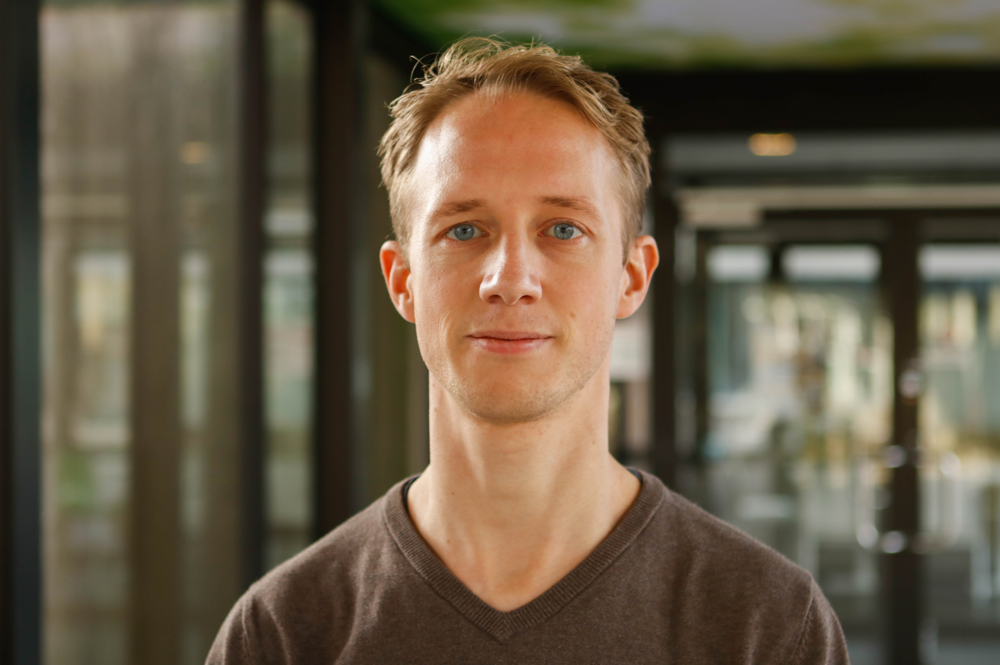

|  | |
|
By applying and developing language technology I like to study what language and communication can reveal about the world. I am currently working as Assistant Professor at the Social AI group at VU University, with as primary interest to improve on the empathic competence of chatbots. As a postdoctoral researcher at Radboud University I studied sentiment (towards vaccination on Twitter and product aspects in online reviews), text readability prediction and question answering. During my PhD I have studied the language of anticipation, sarcasm and a diversity of emotions, leading to a system that detects (future) events and identifies anticipointment. |